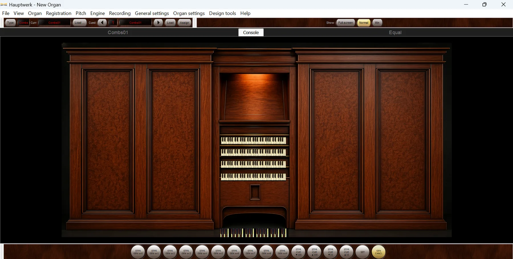
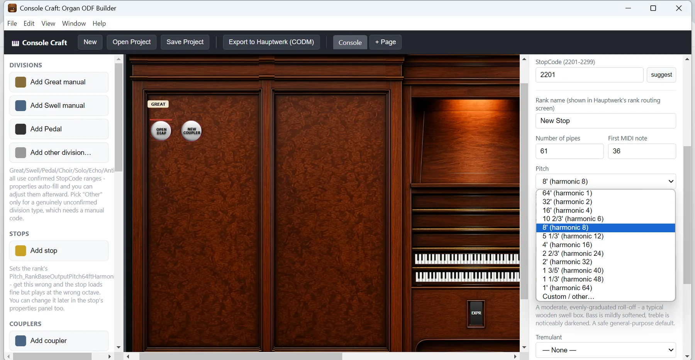
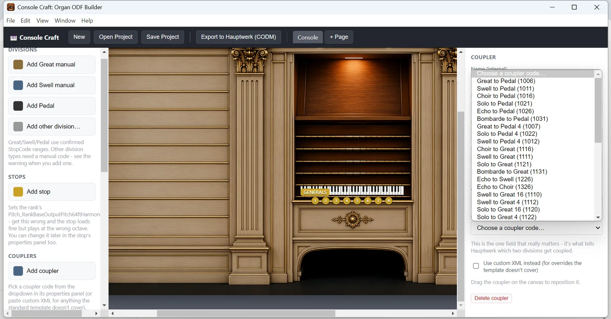
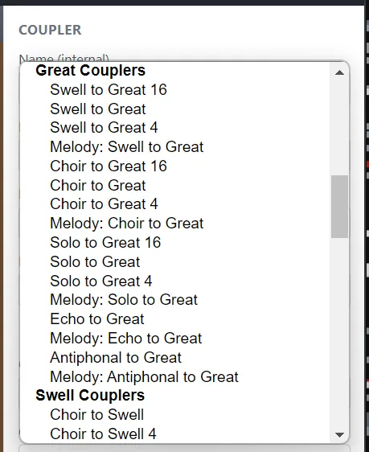
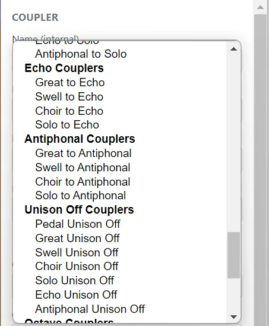
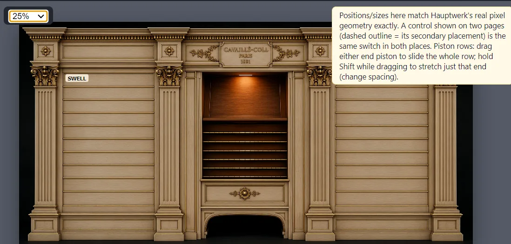
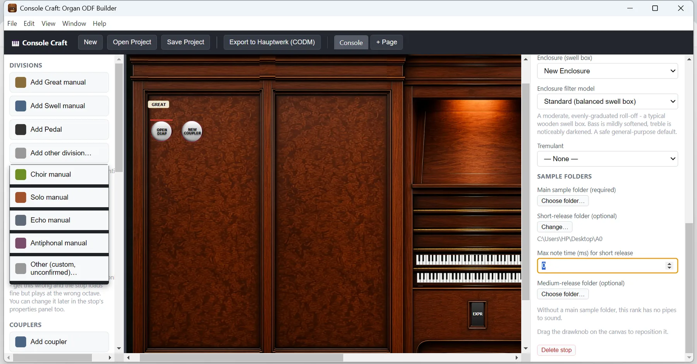
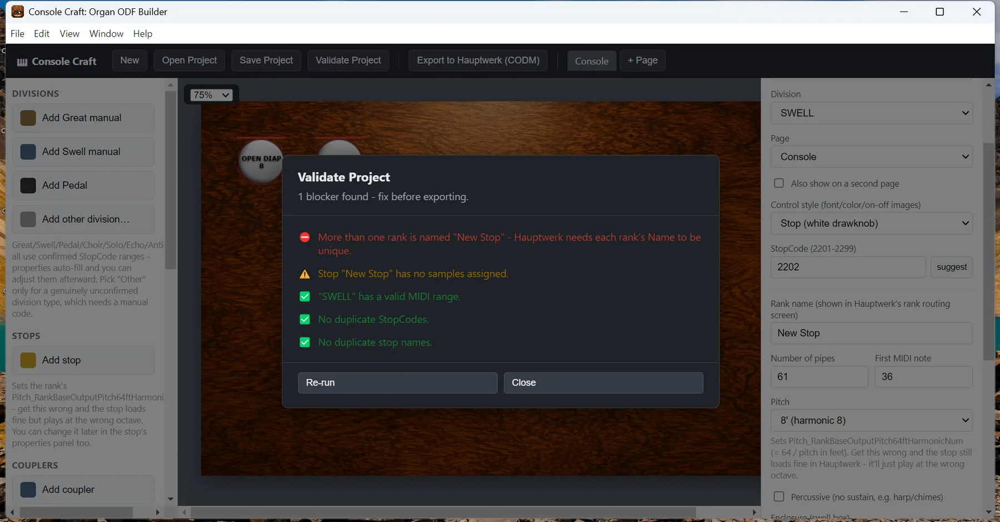

Desktop Application · Installer & Portable Versions
Architect Hauptwerk organs
without hand-coding XML.
Console Craft is an advanced WYSIWYG visual editor engineered for Hauptwerk's Custom Organ Design Module (CODM) architecture. Map divisions, stops, and couplers effortlessly on an interactive canvas matching true console pixel geometry, utilize pre-verified reference ranges, and export production-ready ODF files instantly.
StopCode ranges strictly adhere to standard Hauptwerk specifications — Great, Swell, Pedal, Choir, Solo, Echo, and Antiphonal fully integrated.

The Engineering Challenge
Traditional ODF authoring demands exhaustive manual precision.
StopCode parameters are division-critical. Minor errors in pitch or octave designation cause severe transposition issues upon loading.
Complex coupler configurations require managing intricate numeric codes, resulting in constant reference manual lookups.
Pixel-exact console positioning requires tedious manual coordinate computation and layout adjustments.
Core Functionality
Streamlined ODF development designed for organ builders.
Automated StopCode logic for Great, Swell, Pedal, Choir, Solo, Echo, and Antiphonal.
Select your division and let Console Craft auto-assign accurate base ranges. Configure ranks using standard harmonic lists or custom inputs, ensuring flawless transposition mathematics across every pipe rank.

Structured coupler management via intuitive categorized selections.
Browse couplers grouped logically by division—such as Great, Swell, Unison Off, and Octave variants—eliminating numerical guesswork and streamlining console architecture.



Precise visual positioning mirroring native Hauptwerk constraints.
Position drawknobs, pistons, and rows intuitively with direct drag-and-drop mechanics. Handle multi-page elements effortlessly with clear indicator markers.

Integrated management of acoustic environments and sample mappings.
Configure swell box filter models, tremulant behaviors, and link main, short-release, and medium-release sample paths directly to their respective pipe ranks.

Preflight Diagnostics
Proactive project verification before compilation.
Console Craft's built-in validation engine intercepts common structural errors—including duplicate identifiers, unassigned sample directories, and invalid MIDI mappings—preventing silent load failures inside Hauptwerk.
- Blocker Duplicate rank designations detected.
- Warning Unassigned sample directory pointers.
- Pass All MIDI ranges and parameters verified successfully.

The Ultimate Objective
Precision engineering dedicated to authentic acoustic realization.
About the Creator
Engineered with passion for music and technical precision.
Console Craft is developed by Adeboye Thompson, a software developer, organist, and organ enthusiast based in Lagos, Nigeria. With an academic background in Cellular and Molecular Biology from the University of Texas at Austin (2005), his technical journey is driven by a deep fascination with electronics, advanced programming, precision woodwork, sound processing, and structural design. Console Craft bridges his professional software expertise with his lifelong dedication to pipe organ artistry.
Deployment & Distribution
Download Console Craft for your workflow.
Choose between the standard installation package or the standalone portable build depending on your setup preferences. Both versions include full application capabilities.
Available for Windows
Free Starter Assets
Need custom graphics for your console layout? We have provided a free starter directory containing various background images, custom Willis-style nameplates, and drawknobs you can use to get started creating your own sample sets.
Browse & Download Assets